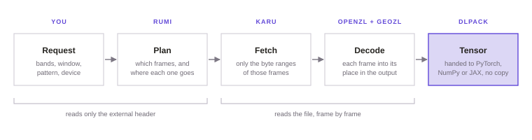
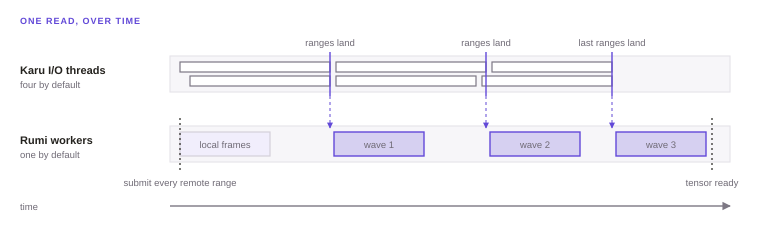
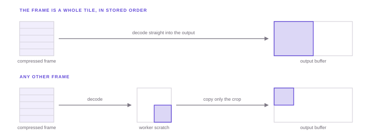
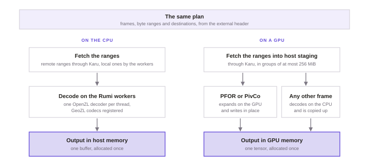

How Rumi reads
- What happens between
rumi.read()and the tensor, on the CPU and on a GPU.
A read is one call. You say which samples you want and where they should land, and you get a tensor back. Inside that call Rumi plans the read, fetches the bytes, decodes them and hands the result over. This page follows one small read through those steps.

The example
The file is a public Sentinel-2 tile, a 512 by 512 Image with four uint16 bands. It is stored in 256 by 256 tiles, one band per frame. The call asks for bands 3 and 0 inside a 128 by 128 window.
from urllib.request import Request, urlopen
import rumi
BASE = "https://data.source.coop/asterisk-labs/rumi-api-fixtures"
def fetch(url):
request = Request(url, headers={"User-Agent": "rumi-example"})
with urlopen(request) as response:
return response.read()
header = fetch(f"{BASE}/headers/s2-00-tile.header")
chip = rumi.read(
f"{BASE}/data/s2-00-tile.rumi",
header,
bands=[3, 0],
window=(192, 128, 128, 128),
pattern="b y x",
framework="torch",
device="cpu",
)
assert chip.shape == (2, 128, 128)The window is (row, column, height, width). The second argument is the file's external header, a small blob kept beside the file, 58 bytes here. It holds the shape, dtype, tile size, frame layout and the compressed size of every frame. That is all Rumi needs to plan.
1. Plan
First the request is checked against the external header, in _read.py. A band that does not exist, a window outside the image or a dtype the framework cannot hold raises an error here, before any byte is read.
Then Rumi fixes the output. The axes are n t b y x, for item, time, band, row and column, and pattern puts them in order. Parentheses merge axes, so (t b) y x gives one channel axis. Here the shape is (2, 128, 128), or 65,536 bytes. Rumi allocates that buffer once. Every frame writes its own part of it, so nothing is stacked or reshaped at the end.
Last, Rumi lists the frames under the window, in append_read_plan() in read.cpp. Each entry says which bytes to fetch and where their samples go. The window touches two tiles and asks for two bands, so the plan has four frames.

So far Rumi has not read a single byte of the file. From a tile to its bytes shows how a frame becomes an offset and a length.
2. Fetch
Rumi asks for byte ranges, never for whole files. Where they come from depends on the source.
| Bytes in memory | Read where they are. |
|---|---|
| A local path | Read by the worker that decodes the frame. |
| A remote URI | https://, s3://, hf:// and the other remote schemes go to Karu, the transport library under Rumi, every range of the read in one batch. |
Karu merges ranges that sit close together into fewer requests and runs them on its own I/O threads, four unless KARU_IO_THREADS says otherwise. Rumi does not wait for the whole batch. The workers decode the local frames first, then each wave of remote frames as it lands, while Karu keeps downloading the next one.

rumi.read() still returns only when the tensor is complete.3. Decode
Each Rumi worker thread owns an OpenZL decoder with the GeoZL codecs registered, in plan.cpp. A frame carries its own compression graph, so Rumi never picks a codec. It only checks that the decoded frame has the expected sample width and size.
Where the samples go depends on the frame. A frame that covers a whole tile in the stored order decodes straight into the output. Any other frame decodes into the worker's scratch buffer, and only the crop is copied out. In the example every frame is cropped.

The workers come from one pool per process. It has one thread unless RUMI_NUM_THREADS or rumi.set_num_threads() asks for more, and the first parallel read fixes its size. The plan already fixed every destination, so the order in which frames finish never changes the result.
4. Hand over
The full buffer is wrapped as a DLPack tensor. PyTorch, NumPy, JAX and TensorFlow take it over without a copy. framework="dlpack" returns a RumiArray instead, which any DLPack consumer can import once.
On a GPU
Pass device="cuda:0" or device="mps" and the plan stays the same. The fetch and the decode change.

The output tensor lives on the GPU. Ranges from a path or a URI go through Karu into host staging that Rumi keeps between reads, in groups of at most 256 MiB of decoded samples. GeoZL then routes each frame on its own. A frame whose recipe ends in PFOR or PivCo lanes expands on the GPU and writes its crop into the tensor. Any other frame decodes on the CPU and is copied up. decode_backend="cpu" sends every frame the CPU way. What runs on the GPU, in the GeoZL docs, lists the exact recipes.
GPU frames are still parsed on the CPU first. Rumi gives GeoZL the same thread count as its worker pool, so rumi.set_num_threads() sets it, and it is one by default.
On CUDA the read runs on a stream Rumi owns. When a framework imports the tensor, its stream waits for the read, so the tensor is ready to use. On Metal the read finishes before the call returns.
A GPU read fails in three cases. NumPy holds only CPU arrays. Boolean samples have no GPU path yet. And Rumi refuses GPU reads while RUMI_VERIFY is on, because it does not ask GeoZL to verify checksums.
Many windows in one plan
read_many() takes one source, external header and window per item and returns one tensor with a leading n axis. It is not a loop over read(). Every item's frames go into one plan, so the remote ranges of the whole batch share one Karu batch and the workers stay busy across it.
names = ["s2-00-tile", "s2-01-tile", "s2-02-tile"]
sources = [f"{BASE}/data/{name}.rumi" for name in names]
headers = [fetch(f"{BASE}/headers/{name}.header") for name in names]
windows = [(0, 0, 128, 128), (128, 192, 128, 128), (320, 256, 128, 128)]
batch = rumi.read_many(sources, headers, windows=windows, framework="torch")
assert batch.shape == (3, 4, 128, 128)Item k has its own slot in the output, so the batch keeps the input order whatever order the frames finish in. The items must share tile size, band count, dtype, time count and frame layout, and every window must have the same height and width. The images themselves may differ in size. Without windows every image is read whole, and then they must also share a size.
In a DataLoader
A PyTorch dataset that defines __getitems__ receives every index of a batch at once. That maps each batch to one read_many() call. The result is already a batch, so the collate function returns it as it is.
import torch
class Chips(torch.utils.data.Dataset):
def __init__(self, sources, headers, windows):
self.sources = sources
self.headers = headers
self.windows = windows
def __len__(self):
return len(self.windows)
def __getitems__(self, indices):
return rumi.read_many(
[self.sources[i] for i in indices],
[self.headers[i] for i in indices],
windows=[self.windows[i] for i in indices],
framework="torch",
)
def keep(batch):
return batch
def start_worker(_):
rumi.set_num_threads(2)
if __name__ == "__main__":
chips = Chips(sources * 4, headers * 4, windows * 4)
loader = torch.utils.data.DataLoader(
chips,
batch_size=4,
collate_fn=keep,
num_workers=2,
worker_init_fn=start_worker,
)
for batch in loader:
assert batch.shape == (4, 4, 128, 128)Each DataLoader worker is its own process with its own Rumi pool. A thread count set in the parent does not carry over, so set it in worker_init_fn as above or with RUMI_NUM_THREADS. The decode threads in use are num_workers times that count.
External headers are plain bytes and travel to the workers with the dataset. Load them once, from a catalog or a manifest. Calling rumi.info() for every item costs one more request per file.
GPU reads stay in the main process. A GPU context does not survive a fork. Use num_workers=0 and pass device="cuda:0" to read_many() inside __getitems__. The GPU then does the decoding that worker processes would do.
macOS starts workers with spawn. Each worker imports the script again, so the loop sits under if __name__ == "__main__":. Keep that default, because a forked worker on macOS can crash.
Where it lives
_read.py | Checks the request in Python |
|---|---|
capi.cpp | The C API, its checks and the DLPack tensor |
read.cpp | The plan, the Karu batch and the decode waves |
plan.cpp | OpenZL decoding and the copy into place |
gpu.cpp | GPU groups and the calls into GeoZL |